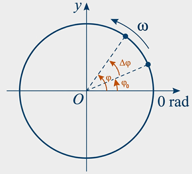

1º Ano | Aula 13: Movimento Circular Uniforme (MCU)
📚 Resumo
O Movimento Circular Uniforme (MCU) ocorre quando um objeto percorre uma trajetória circular com velocidade escalar constante.
Embora a rapidez não mude, a direção do vetor velocidade se altera continuamente, o que implica na existência de uma aceleração centrípeta apontada para o centro da curva.
📖 Movimento Circular Uniforme
1. Conceitos Fundamentais: Período e Frequência
No MCU, a trajetória é circular e a velocidade escalar é constante. O movimento é periódico (se repete em intervalos iguais):
Período ($T$): Tempo para completar uma volta inteira. Unidade: segundos (s).
Frequência ($f$): Número de voltas por segundo. Unidade: Hertz (Hz).
Relação: $f = \frac{1}{T}$
2. Grandezas Angulares
Para descrever o movimento na circunferência, utilizamos medidas de ângulos (geralmente em radianos):

Figura 1: Grandezas Angulares.
Posição Angular ($\varphi$): É o arco de circunferência ($s$) dividido pelo raio ($R$). Indica onde o corpo está na trajetória: $\varphi = \frac{s}{R}$.
Deslocamento Angular ($\Delta \varphi$): É a variação do ângulo entre o instante final e inicial: $\Delta \varphi = \varphi - \varphi_0$.
Velocidade Angular ($\omega$): Mede a rapidez com que o ângulo varia: $\omega = \frac{\Delta \varphi}{\Delta t}$. Para uma volta completa: $\omega = \frac{2\pi}{T}$ ou $\omega = 2\pi f$.
3. Função Horária Angular
Como a velocidade angular ($\omega$) é constante no MCU, a posição angular varia linearmente com o tempo, de forma análoga ao MRU:
$\varphi = \varphi_0 + \omega \cdot t$
Onde:
$\varphi$: Posição angular final (rad).
$\varphi_0$: Posição angular inicial (rad).
$\omega$: Velocidade angular (rad/s).
$t$: Intervalo de tempo (s).
4. Velocidade Linear e Aceleração
Velocidade Linear ($v$): Tangente à trajetória. Relaciona-se com a angular por: $v = \omega \cdot R$.
Aceleração Centrípeta ($a_{cp}$): Aponta para o centro da curva e muda a direção do vetor velocidade: $a_{cp} = \frac{v^2}{R}$ ou $a_{cp} = \omega^2 \cdot R$.
5. Tabela Resumo de Fórmulas
Grandeza
Símbolo
Fórmula Principal
Posição Angular
$\varphi$
$\varphi = \frac{s}{R}$
Velocidade Angular
$\omega$
$\omega = \frac{2\pi}{T} = 2\pi f$
Velocidade Linear
$v$
$v = \frac{\Delta s}{\Delta t} = \omega \cdot R$
Função Horária
$\varphi(t)$
$\varphi = \varphi_0 + \omega \cdot t$
Aceleração Centrípeta
$a_{cp}$
$a_{cp} = \frac{v^2}{R}$
💡 Física em Ação
🧺 Máquina de Lavar (Centrifugação)
Durante a centrifugação, o tambor gira em alta frequência. A aceleração centrípeta mantém a roupa em movimento circular, mas a água, por inércia, escapa pelos furos, secando as peças.
🕰️ Relógios Analógicos
Os ponteiros de um relógio são exemplos perfeitos de MCU. Cada ponteiro possui uma velocidade angular constante e bem definida: o de segundos completa uma volta em 60s, o de minutos em 3600s.
✅ 5 Questões Resolvidas (R 1 a 5)
R 1: Cálculo de Período e Frequência
Enunciado: Um ventilador completa 120 voltas em 1 minuto. Determine a frequência em Hz e o período em segundos.
Enunciado: Qual a velocidade angular de um ponteiro de segundos de um relógio analógico?
Resolução: O ponteiro de segundos leva 60s para dar uma volta ($2\pi$ rad).
$\omega = \frac{2\pi}{T} = \frac{2\pi}{60} = \mathbf{\frac{\pi}{30} \text{ rad/s}}$.
R 3: Velocidade Linear
Enunciado: Um carro percorre uma pista circular de raio $50\text{ m}$ com velocidade angular de $0,4\text{ rad/s}$. Qual sua velocidade linear?
Resolução: Usamos a relação $v = \omega \cdot R$:
$v = 0,4 \times 50 = \mathbf{20\text{ m/s}}$.
R 4: Aceleração Centrípeta
Enunciado: Um objeto em MCU tem velocidade de $10\text{ m/s}$ e raio de curvatura de $20\text{ m}$. Calcule a aceleração centrípeta.
Enunciado: Duas polias A e B, de raios $R_A = 10\text{ cm}$ e $R_B = 20\text{ cm}$, estão ligadas por uma correia. Se A gira a $60\text{ Hz}$, qual a frequência de B?
Enunciado: No MCU, a velocidade vetorial é constante? Justifique.
Resolução: Não. Embora o módulo (valor) da velocidade seja constante, sua direção muda a cada instante para acompanhar a curva, por isso a velocidade vetorial é variável.
P 7: Conversão RPM para Hz
Enunciado: Um motor gira a $3000\text{ RPM}$ (rotações por minuto). Qual sua frequência em Hz?
Resolução: Para passar de RPM para Hz (rotações por segundo), dividimos por 60: $3000 / 60 = 50\text{ Hz}$.
P 8: Comprimento da Circunferência
Enunciado: Um atleta corre em uma pista circular de raio $100\text{ m}$. Ao dar uma volta completa, qual a distância aproximada percorrida? (Use $\pi = 3,14$)
Enunciado: Duas engrenagens estão presas ao mesmo eixo. Elas possuem necessariamente o mesmo período?
Resolução: Sim. Como estão presas ao mesmo eixo, elas giram juntas, completando uma volta no mesmo intervalo de tempo ($\omega$ e $f$ iguais).
🎓 TESTES (T 11 a 15)
T 11: (UFRS) Período e Frequência
Um corpo em movimento circular uniforme completa 20 voltas em 10 segundos. O período (em s) e a frequência (em s⁻¹) do movimento são, respectivamente:
A) 0,5 e 2
B) 2 e 0,5
C) 0,5 e 5
D) 10 e 20
E) 20 e 2
Resolução: Alternativa A.
O período (T) é o tempo de uma volta: T = 10/20 = 0,5 s.
A frequência (f) é o inverso do período: f = 20/10 = 2 Hz.
T 12: (PUC) Velocidade Angular
Um ciclista pedala em uma trajetória circular de raio R = 5 m, com a velocidade de translação v = 150 m/min. A velocidade angular do ciclista, em rad/min, é:
A) 60
B) 50
C) 40
D) 30
E) 20
Resolução: Alternativa D.
Utilizamos a relação entre velocidade linear ($v$) e velocidade angular ($\omega$):
$v = \omega \cdot R$
$150 = \omega \cdot 5$
$\omega = \frac{150}{5} = 30\text{ rad/min}$.
T 13: (VUNESP) Velocidades Angular e Linear
Uma gota de tinta cai a 5 cm do centro de um disco que está girando a 30 rpm. As velocidades angular e linear da mancha provocada pela tinta são, respectivamente, iguais a:
A) $\pi$ rad/s e 5$\pi$ cm/s
B) 4$\pi$ rad/s e 20$\pi$ cm/s
C) 5$\pi$ rad/s e 25$\pi$ cm/s
D) 8$\pi$ rad/s e 40$\pi$ cm/s
E) 10$\pi$ rad/s e 50$\pi$ cm/s
Resolução: Alternativa A.
1. Frequência: $f = \frac{30\text{ rpm}}{60} = 0,5\text{ Hz}$.
2. Velocidade angular ($\omega$): $\omega = 2\pi f = 2\pi \cdot 0,5 = \pi\text{ rad/s}$.
3. Velocidade linear ($v$): $v = \omega \cdot R = \pi \cdot 5 = 5\pi\text{ cm/s}$.
T 14: (UNICAMP) Aceleração Centrípeta
As agências espaciais NASA (norte-americana) e ESA (europeia) desenvolvem um projeto para desviar a trajetória de um asteroide através da colisão com uma sonda especialmente enviada para esse fim. A previsão é que a sonda DART (do inglês, “Teste de Redirecionamento de Asteroides Duplos”) será lançada com a finalidade de se chocar com Didymoon, um pequeno asteroide que orbita um asteroide maior chamado Didymos.
Obs.: para a questão, aproxime $\pi = 3,0$ sempre que necessário.
O asteroide satélite Didymoon descreve uma órbita circular em torno do asteroide principal Didymos. O raio da órbita é $r = 1,6$ km e o período é $T = 12$ h. A aceleração centrípeta do satélite vale:
A) $8,0 \times 10^{-1}$ km/h²
B) $4,0 \times 10^{-1}$ km/h²
C) $3,125 \times 10^{-1}$ km/h²
D) $6,667 \times 10^{-2}$ km/h²
Em uma viagem a Júpiter, deseja-se construir uma nave espacial com uma seção rotacional para simular, por efeitos centrífugos, a gravidade. A seção terá um raio de 90 metros. Quantas rotações por minuto (RPM) deverá ter essa seção para simular a gravidade terrestre? (considere $g = 10$ m/s²).
A) $\frac{10}{\pi}$
B) $\frac{2}{\pi}$
C) $\frac{20}{\pi}$
D) $\frac{15}{\pi}$
Resolução: Alternativa A.
1. Para simular a gravidade, a aceleração centrípeta deve ser igual a $g$: $a_c = \omega^2 \cdot R = 10$.
2. $\omega^2 \cdot 90 = 10 \Rightarrow \omega^2 = \frac{1}{9} \Rightarrow \omega = \frac{1}{3}\text{ rad/s}$.
3. Como $\omega = 2\pi f$, temos: $\frac{1}{3} = 2\pi f \Rightarrow f = \frac{1}{6\pi}\text{ Hz}$.
4. Convertendo para RPM (multiplicando por 60): $f = \frac{60}{6\pi} = \frac{10}{\pi}\text{ RPM}$.